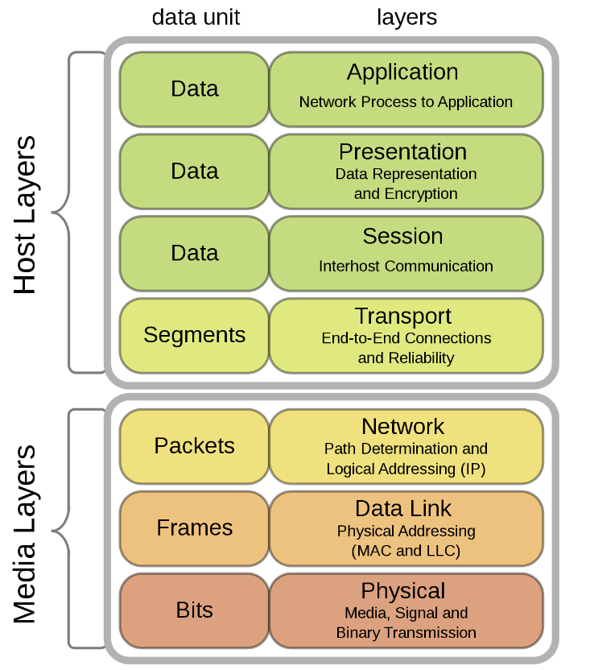
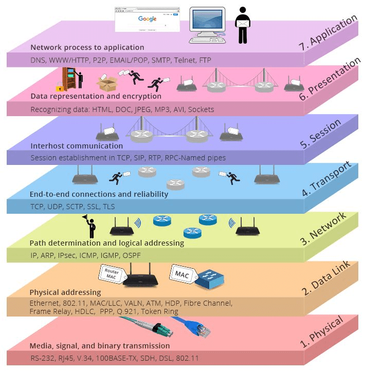

El Modelo OSI (Interconexión de Sistemas Abiertos) es un marco conceptual que estandariza las funciones de una red de telecomunicaciones o de computadoras en siete capas distintas. Fue desarrollado por la ISO (International Organization for Standardization) en 1984 para facilitar la interoperabilidad entre diferentes sistemas de redes y asegurar que los dispositivos de diferentes fabricantes puedan comunicarse de manera efectiva.
El modelo OSI sirve como guía de referencia para entender y diseñar sistemas de comunicación y establecer protocolos de red. Cada capa en el modelo OSI tiene una función específica y se comunica solo con la capa inmediatamente superior e inferior. Esta división en capas ayuda a aislar las funciones y permite el desarrollo modular y la solución de problemas en las redes.
Los principios teóricos en los que se basaron para la realización de OSI podemos resumirlos en los siguientes:
- Cada capa de la arquitectura está pensada para realizar una función bien definida.
- El número de niveles debe ser suficiente para que no se agrupen funciones distintas, pero no tan grande que haga la arquitectura inmanejable.
- Debe crearse una nueva capa siempre que se necesite realizar una función bien diferenciada del resto.
- Las divisiones en las capas deben establecerse de forma que se minimice el flujo de información entre ellas, es decir, que la interfaz sea más sencilla.
Hay dos tipos básicos de modelos para describir las funciones que deben estar presentes para que las comunicaciones de red sean exitosas: modelos de protocolo y modelos de referencia.
- Modelo de Protocolo: Este modelo coincide estrechamente con la estructura de un conjunto de protocolos en particular. Una suite de protocolos incluye el conjunto de protocolos relacionados que generalmente proporcionan toda la funcionalidad requerida para que las personas se comuniquen con la red de datos. El modelo TCP/IP es un modelo de protocolos porque describe las funciones que ocurren en cada capa de protocolos dentro de una suite de TCP/IP.
- Modelo de Referencia: Este tipo de modelo describe las funciones que se deben completar en una capa en particular, pero no especifica exactamente cómo se debe realizar una función. Un modelo de referencia no pretende ofrecer un nivel de detalle suficiente para definir en forma precisa la manera en la que cada protocolo debería funcionar en cada capa. El objetivo principal de un modelo de referencia es ayudar a comprender mejor las funciones y los procesos necesarios para las comunicaciones de red. El modelo de referencia de redes más conocido fue creado por el proyecto Interconexión de Sistemas Abiertos (Open Systems Interconnection -OSI) en la Organización Internacional de Estandarización (ISO). Se usa para diseño de redes de datos, especificaciones de funcionamiento y resolución de problemas. Este modelo se conoce comúnmente como el modelo OSI.

Este modelo de vinculación de sistemas presenta diferentes niveles que se encuentran relacionados entre sí, se estandariza la comunicación a fin de poder lograr, a través de diferentes niveles, el intercambio de información.
Cada uno de sus niveles tiene una función específica, solucionando el problema de la incompatibilidad que existía en diferentes redes. Las capas: son niveles dentro de una estructura de red, y cada uno de los niveles tiene una función que debe cumplirse de manera concatenada. Este modelo de comunicación permitía lograr que toda forma de enviar información a través de un dispositivo hacia Internet y viceversa tuviese un camino bien estructurado y fácil de comprender, a fin de que en cuestión de segundos lograra el resultado esperado. Ese camino se reflejaba en una estructura de 7 tipos de capas, teniendo en cuenta que se comienza desde la séptima hasta la primera:
| Capas del Modelo OSI | Descripción |
| 7. Aplicación | Contiene protocolos utilizados para comunicaciones proceso a proceso. Se encuentra en proximidad con el usuario y le brinda aplicaciones que se encuentran fuera del modelo. |
| 6. Presentación | Proporciona una representación común de los datos transferidos entre los servicios de la capa de aplicación. Permite asegurar que la información que fue transferida pueda ser leída en el nivel de aplicación. la información viaja en varios lenguajes, con lo cual esta capa ayuda a universalizarlo con el objeto de que el destinatario final pueda leer y entender de qué se trata. |
| 5. Sesión | Proporciona servicios a la capa de presentación para organizar su diálogo y administrar el intercambio de datos. Administra el proceso desde que se establece una sesión hasta que finaliza entre dos hosts. |
| 4. Transporte | Define los servicios para segmentar, transferir y reensamblar los datos para las comunicaciones individuales entre terminales. Proporciona conectividad, direccionamiento y enrutamiento. A su vez gestiona las conexiones a través de la red para las capas superiores. |
| 3. Red | Proporciona servicios para intercambiar los datos individuales en la red entre terminales identificados. Proporciona conectividad, direccionamiento y enrutamiento. A su vez gestiona las conexiones a través de la red para las capas superiores. |
| 2. Enlace de Datos | Describen los métodos para intercambiar tramas de datos entre dispositivos en un medio común. Consiste en brindar los medios de tránsito confiables de datos en un enlace físico. Por lo tanto, la presente capa se encargará de direccionar los datos y el control de flujo. |
| 1. Física | Describen los medios mecánicos, eléctricos, funcionales y de procedimiento para activar, mantener y desactivar conexiones físicas para una transmisión de bits hacia y desde un dispositivo de red. Se consideran los aspectos mecánicos, eléctricos y los medios de transmisión; por ejemplo: cables, tipologías, calidad, conectores, etcétera. Lo importante es que define el vínculo existente entre un dispositivo y un medio de transmisión. |
